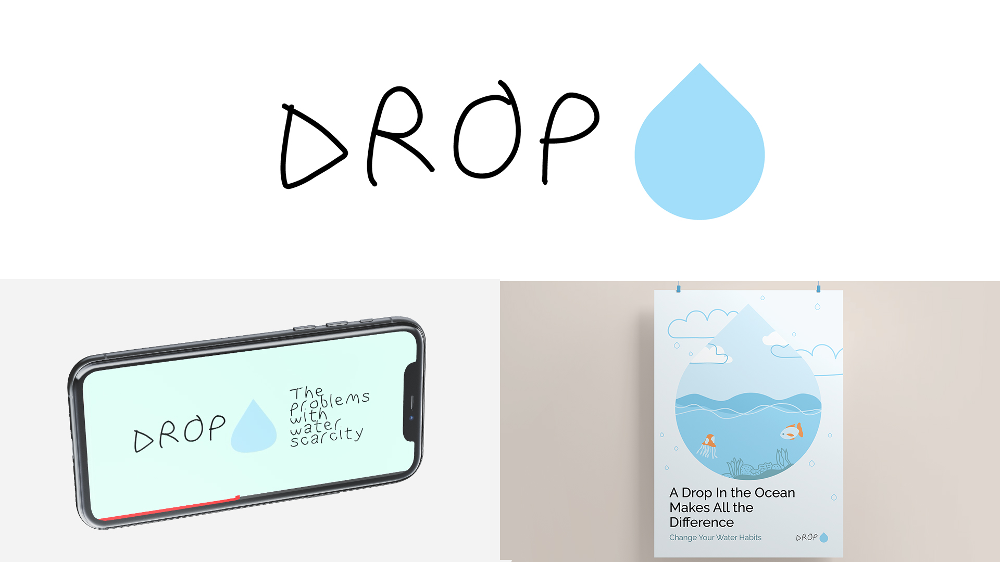

biography
Hi, I am Stephanie Derby and I will be graduating with a Bachelor of Design majoring in Media Design. I have always been passionate about art and design and have found that The University of Waikato was the place to explore and build my skills and knowledge.
Design is always something that I wanted to do but coming to Waikato opened my eyes to the different areas of design and the creative scope that I could achieve. Design is so much more than drawing some illustrations and finding a good typeface, and I have learned and gained so much through this degree. My interests in design are motion graphics and illustration.
project description
Water is an important resource that many of us take for granted. It is a necessity for everyday life, but
its natural sources are being depleted and pollution and water scarcity are taking hold. With
approximately 80% of sea litter coming from the land, pollution has become a major issue, affecting both
sea life and water quality for human consumption. Our water is being polluted with radioactive
substances from televisions and watches, as well as industrial waste and household trash. Water scarcity
is another issue we are facing, as many people cannot access fresh, clean drinking water and this issue
is only increasing with climate change and further pollution. People need to change their water habits
to make sure this is a resource everyone can access and enjoy.
My project ‘DROP’ seeks to help people change their behaviour by informing and educating younger
audiences who are more receptive to change and likely to act. ‘DROP’ focuses on using short form
animations and posters to educate, with a water bottle product to help users start to implement the
changes we need to save water. The catchphrase for the project is “Change Your Water Habits”, which is
what this project captures and encourages people to do.
DROP

For more information contact us
Email: degreeshow@waikato.ac.nz
Faculty phone: 0800 924 528
Faculty information: cs.waikato.ac.nz